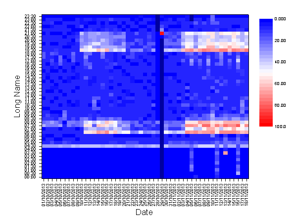
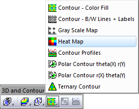

Heatmap
Heat_map
- 
Datenanforderungen
- Arbeitsblatt: Wählen Sie XY-Spalten oder XYZ-Spalten (voll oder Teilbereich) oder eine virtuelle Matrix aus.
oder
- Matrix: Ein Matrixblatt. Ein Blatt mit mehreren Objekten wird unterstützt.
oder
- Bild: Ein Bildfenster. Ein Bild mit mehreren Frames wird unterstützt. Lesen Sie auf dieser Seite unten, wie Sie durch alle Frames gehen.
Diagramm erstellen
Aktivieren Sie das Matrixblatt oder wählen Sie die erforderlichen Daten im Arbeitsblatt oder Bildfenster aus.
Wählen Sie im Menü .
oder
Klicken Sie auf die Schaltfläche Heatmap der Symbolleiste 3D- und Konturdiagramme.
- 
Vorlage
HeatMap.otp
(installiert im Origin-Programmordner)
Notizen
Dieses Diagramm basiert auf dem Konturdiagramm, zeigt aber einige Unterschiede:
- Auf der Registerkarte Farbpalette/Kontur des Dialogs Details Zeichnung ist Bis zu Gitternetzlinien standardmäßig aktiviert; es sind keine Konturlinien eingezeichnet.
- Hilfsstriche werden auf den Block zentriert. Es werden keine kleinen Hilfsstriche gezeigt.
- Beim Zeichnen von XY-Arbeitsblattdaten wird eine 2D-Häufigkeitszählung für die XY-Daten durchgeführt, basierend auf einer anwenderspezifischen Eingabe. Die Einteilungsklassen werden automatisch ausgewählt und jeder Einteilung wird eine Anzahl der XY-Paaren zugewiesen. Die sich ergebende eingeteilte Ausgabe wird verwendet, um die Heatmap zu erzeugen. Hierbei liefern die Klassenmitten in den Beschriftungszeilen des Ausgabeblatts die Hilfsstriche/Beschriftungen der Y-Achsen und die Klassenmitten in der ersten Spalte die Hilfsstriche/Beschriftungen der X-Achse. Die Einteilung wird von der X-Funktion plot_heatmapxy geregelt.
- Beim Zeichnen von XYZ-Arbeitsblattdaten wird eine 2D-Häufigkeitszählung für die XYZ-Daten durchgeführt, basierend auf einer anwenderspezifischen Eingabe. Standardmäßig werden Einteilungen automatisch gewählt und ein mittlerer Z-Wert wird für jede Einteilung berechnet (Beachten Sie, dass der Anwender andere Statistiken festlegen kann). Die sich ergebende eingeteilte Ausgabe wird verwendet, um die Heatmap zu erzeugen. Hierbei liefern die Klassenmitten in den Beschriftungszeilen des Ausgabeblatts die Hilfsstriche/Beschriftungen der Y-Achsen und die Klassenmitten in der ersten Spalte die Hilfsstriche/Beschriftungen der X-Achse. Die Einteilung wird von der X-Funktion plot_heatmapxyz geregelt.
- Beim Zeichnen aus einer virtuellen Matrix ist die Anzahl der großen Hilfsstriche auf der X-Achse gleich der Anzahl der Zeilen; die Anzahl der großen Hilfsstriche auf der Y-Achse ist gleich der Anzahl der Spalten.
- Standard ist auch die Verwendung der Palette Thermometer für die Farbabbildung der Füllung von Heatmaps. Fehlende Werte verwenden ein tieferes Blau als die Farbe für 0.